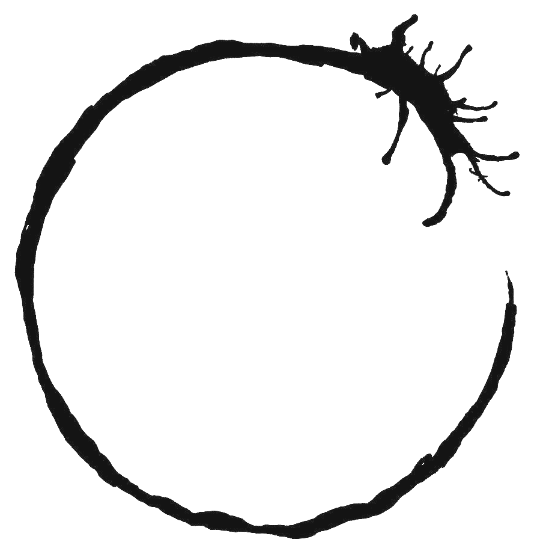
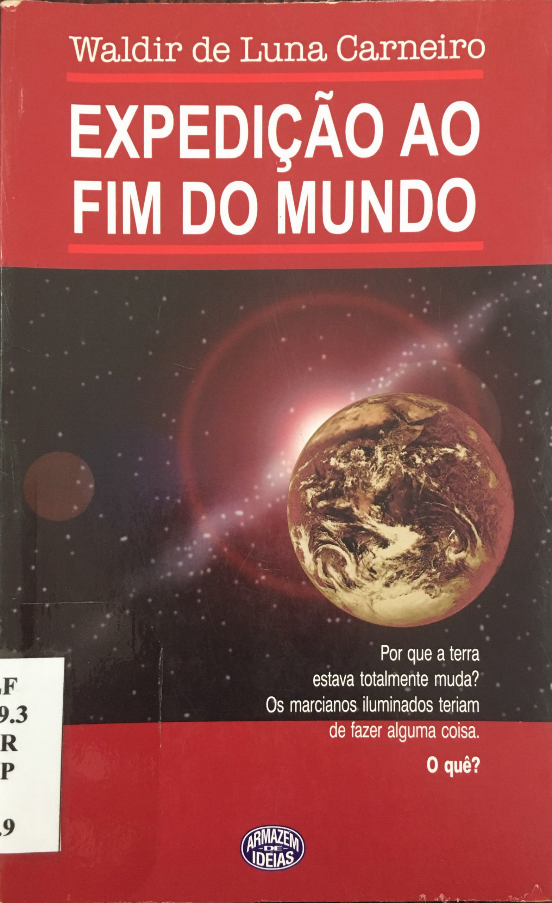

Filósofo
Graduando do 4ºPeriodo de Filosofia pela UFMG, meu amor com
certeza são a
Lógica, Filosofia da Linguagem e a Teoria do Conhecimento.
Não há nada mais lindo do que o
saber e saber afirmar o porquê sabe. Nada de ladainha "filosofista",
é apenas muito bom ser capacitado a ser um pesquisador e identificar o raciocínio
lógico dos grandes filósofos.
Lógica nada diferente da aplicada na programação. Lógica como Lógica em todos os
lugares,
bela em sua aplicação em todas as formas.
A racionalidade é um mecanismo social, e apenas somos lógicos interagindo uns com
os outros.
Meu desejo é criar as melhores funcionalidades racionais para a melhor socialização
entre as pessoas.
Meu maior sonho: uma linguagem perfeita, capaz de
transmitir todos os nossos pensamentos sem falhas.
Que seja não-linear, capaz de ser entendida independente do tempo, ou
melhor... de nos fazer
interpretar o tempo de uma forma diferente; de forma a nos fazer interpretar nossa
própria realidade não linearmente,
como em A Chegada (2016).
Que seja possível construir histórias que sejam completas em si mesmas. Como a comunicação por luz
entre os marcianos do livro
Expedição ao Fim do Mundo, de Waldir de Luna Carneiro

